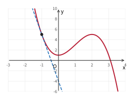
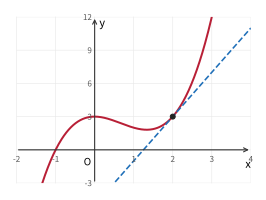
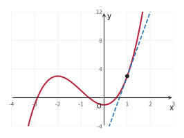

ホーム ＞ 数学II ＞ 微分法（接線・増減・極値）
別冊練習問題 1 の解答 曲線上の点での接線
(1) 曲線 \(y=- x^{3} + 3 x^{2} + 1\) 上の点 \((-1,\ 5)\) における接線の方程式を求めよ。
導関数を求める
\[f'(x)=- 3 x^{2} + 6 x\]接線の傾き（\(x=-1\) での微分係数）
\[f'(-1)=-9\]接点の座標
\[f(-1)=5\]接点は \((-1,\ 5)\)。
接線の方程式
\(y-f(a)=f'(a)(x-a)\) に代入する。
\[y - 5=-9\left(x + 1\right)\ \Rightarrow\ y=- 9 x - 4\]
【答案】
\[y=- 9 x - 4\]答
(2) 曲線 \(y=x^{3} - 2 x^{2} + 3\) 上の点 \((2,\ 3)\) における接線の方程式を求めよ。
導関数を求める
\[f'(x)=3 x^{2} - 4 x\]接線の傾き（\(x=2\) での微分係数）
\[f'(2)=4\]接点の座標
\[f(2)=3\]接点は \((2,\ 3)\)。
接線の方程式
\(y-f(a)=f'(a)(x-a)\) に代入する。
\[y - 3=4\left(x - 2\right)\ \Rightarrow\ y=4 x - 5\]
【答案】
\[y=4 x - 5\]答
(3) 曲線 \(y=x^{3} + 3 x^{2} - 1\) 上の点 \((1,\ 3)\) における接線の方程式を求めよ。
導関数を求める
\[f'(x)=3 x^{2} + 6 x\]接線の傾き（\(x=1\) での微分係数）
\[f'(1)=9\]接点の座標
\[f(1)=3\]接点は \((1,\ 3)\)。
接線の方程式
\(y-f(a)=f'(a)(x-a)\) に代入する。
\[y - 3=9\left(x - 1\right)\ \Rightarrow\ y=9 x - 6\]
【答案】
\[y=9 x - 6\]答